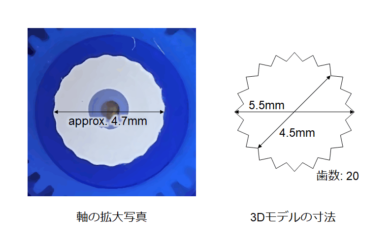
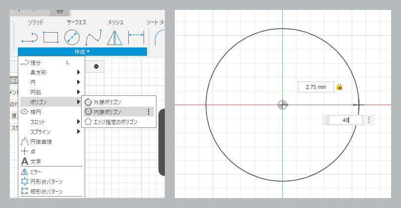
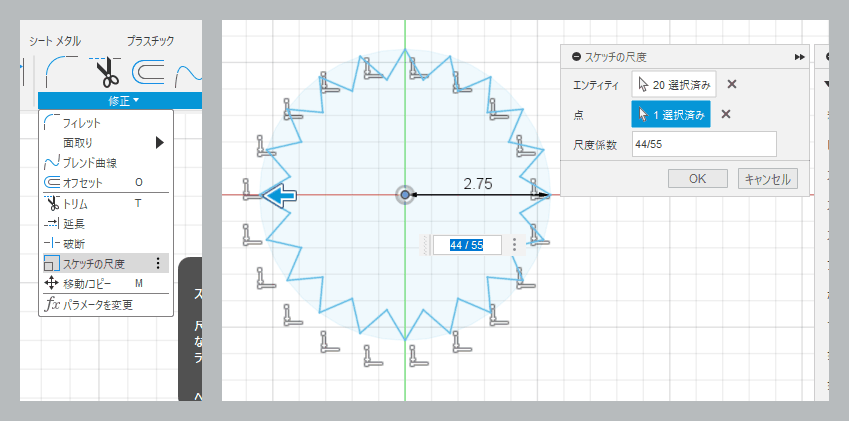

[メモ] RCサーボSG-90のホーンを3Dプリンタで自作する
2024/12/08 |
記事のソース
秋月で売っている マイクロサーボ SG-90 に取り付けるアームを 3D プリンタで作ろうと思いましたが、データシートを見ても軸の寸法が分からず、暗黙的な共通の寸法が存在するのかどうかもよく分からなかったので現物合わせしました。
寸法
追記: SG-90 は軸径・歯数・ギヤ比などの仕様が異なるものが同じ名前で流通しているそうです。
筆者は近所の部品屋で購入しましたが、軸の歯数は 20 枚でした。もしかするとパチモンかもしれません。購入先によって異なるかもしれないのでご注意ください。

Fusion360 で図の右のような寸法でモデリングしてプリントしたところ、ちょっとキツかったですが一応ハマりました。モデルの内径が軸径の実測より小さいですが、実際にプリントすると角が丸くなるので、モデルよりやや大きくなると思います。
上記パラメータは使用するプリンタやコンフィギュレーションに応じて調整が必要です。
軸の長さは今回購入した個体では 3mm でした。
Fusion360 でのモデリング方法
歯形は以下の手順でできました。正攻法かどうかは分かりません。
-
スケッチを作成し「内接ポリゴン」で半径 2.75mm (直径 5.5mm) の円に内接する正 40 角形を作ります (歯数が 21 枚の場合は正 42 角形)。

-
頂点をひとつ飛びに選択し「スケッチの尺度」で図形の中央を中心に 45/55 倍します (内径が 5.5mm × 45 / 55 = 4.5mm になります)。

- この図形をプロファイルとして押し出しにより穴を開けます。